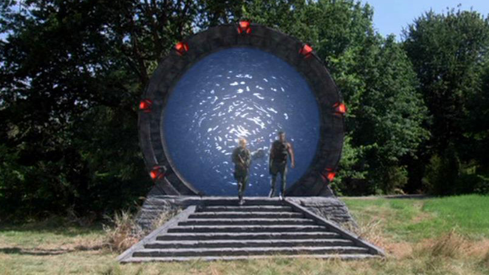

Hvězdná brána
Popis
Hvězdná brána je úžasný kus mimozemské technologie, schopný během okamžiku poslat lidi a objekty o miliony světelných let pryč. Funguje díky prostorovému tunelu nazývaném červí díra.
Obrovský kruh s vnitřní dráhou obsahující 39 symbolů představujících hvězdná souhvězdí.
Vyrobena před tisíciletími Antiky z mimozemského minerálu naquadah a váží asi 29 tun.
Tisíce bran se nacházejí na obyvatelských (nebo dříve obydlených) planetách v celé Mléčné dráze a galaxii Pegasus a možná i dále.
Ovládání
Na jedné straně brány je devět stejně rozmístěných blokovacích mechanismů ve tvaru písmene V, nazývaných chevrony. Ty dokáží uzamknout alespoň sedm symbolů na místě pomocí volně se otáčející vnitřní dráhy.
Prvních šest symbolů identifikuje cílový bod v trojrozměrném prostoru, zatímco sedmý představuje výchozí bod.
Když zapadne sedmý chevron, z brány vyrazí nestabilní energetický vír v násilném "kawoosh", který spálí vše na své cestě. (U osmi-chevronské adresy slouží další chevron k dodatečnému výpočtu vzdálenosti - podobně jako volba oblasti v telefonním čísle. Jedinečná devítichevronová adresa vede k hlubokoprostorné průzkumné lodi Antiků Destiny.)
Jakmile vír zmizí a ustanoví se eventový horizont, může začít cesta ven. Cestovatelé mohou vstoupit do červí díry pouze z přední strany eventového horizontu.
Po přibližně 0,3 sekundové době přechodu (v průměru při cestování v rámci stejné galaxie) objekty opouštějí cílovou Hvězdnou bránu stejnou rychlostí, jakou do ní vstoupily.
Po opuštění brány na druhé straně se Hvězdná brána dokáže sama vypnout. Maximální doba trvání červí díry za normálních okolností je kolem 38 minut, brána se však často vypne, když zjistí, že žádní další cestovatelé se nepokoušejí projít.
Hvězdná brána je v podstatě obrovský supravodič, schopný využívat energii z nejrůznějších zdrojů, zejména přímého elektrického proudu. Když brána pohltí dostatek energie k provozu, vnitřní dráha se odemkne a umožní ruční vytáčení v případě odpojení nebo nefunkčnosti zařízení pro vytáčení (D.H.D.).
Síť hvězdných bran
Síť Hvězdných bran, vybudovaná Antiky, sahá za hranice naší vlastní galaxie.
Většina bran je spárována s D.H.D., pomocí kterého uživatel vytáčí adresu do jiného světa.
Hvězdné velitelství (S.G.C.) nemá D.H.D., a proto zkonstruovalo počítačový systém pro přístup k systémům brány a vytáčení adres. (Tento ovládací systém je pouze částečný a čas od času vyžaduje obejít určité bezpečnostní protokoly uvnitř brány, aby se podařilo uzamknout adresu.)
Historie
Technologii Hvězdné brány vymysleli Antičtí vědci v době, kdy starověký národ emigroval ze své domovské galaxie do Mléčné dráhy. Postupem času zde Antikové vybudovali rozsáhlou síť bran.
Skupina se později přestěhovala do galaxie Pegasus, kde vybudovala další síť Hvězdných bran s použitím modernějších bran (s výraznými modrými chevrony). Některé Hvězdné brány v galaxii Pegasus byly umístěny do vesmíru na oběžné dráze kolem planet, nikoli na jejich povrch.
Místo připojeného D.H.D. jsou vesmírné brány napájeny třemi uzly a vytáčení se provádí pomocí panelu na palubě lodi (například Puddle Jumper).
Hvězdné brány vyžadují mimořádné množství energie k vytvoření červí díry pro cestování mezi galaxiemi - více, než může poskytnout pouze D.H.D. Obvykle se Antikové spoléhali na Zero Point moduly k dosažení tohoto cíle. Také však naprogramovali nové brány Pegasus tak, aby nemohly vytáčet mimo svou galaxii - s výjimkou Hvězdné brány na Atlantidě, která používá unikátní ovládací krystal, aby mohla vytáčet Zemi.
Hvězdná brána Destiny
Možná nejstarší existující brány jsou typu Hvězdná brána Destiny. Tyto brány jsou vyráběny a umisťovány na planety automatizovanými loďemi Antiků v mnoha galaxiích mimo naší vlastní. Místo rozdělení po obydlených galaxiích jsou tyto brány rozmístěny podél předem stanovené trasy letu před lodí Destiny.
Tento model Hvězdné brány se zdá být hrubší, s celou bránou volně se otáčející (bez samostatné vnitřní dráhy) a bez pohyblivých chevronů.s
Brány umístěné na planetách v dalekých galaxiích automatizovanými plavidly také mají menší dosah. Adresa vytáčená z jedné planety může dosáhnout několika dalších bran v těsné blízkosti, ale na rozdíl od modernějších bran obecně nemohou dosáhnout každé jiné Hvězdné brány v dané galaxii.